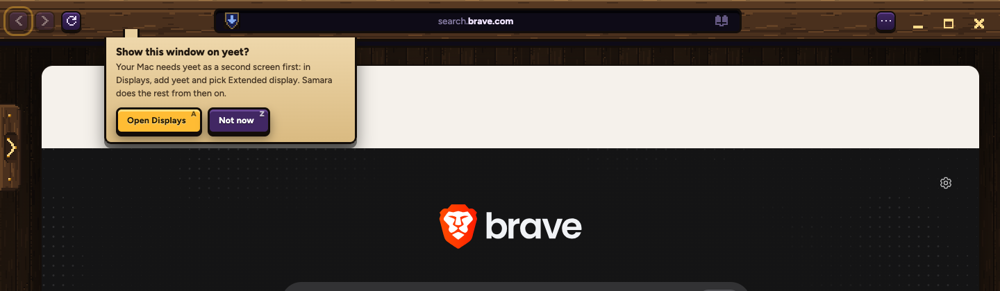
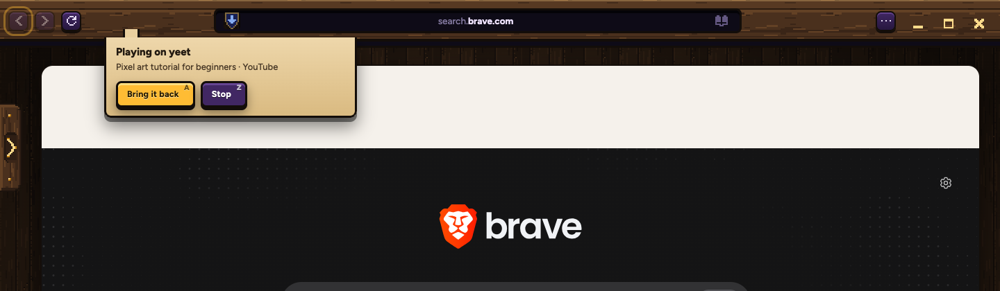

Normal Samara

The secret window

Stremio lives on your bookmarks shelf. Anything can go to your TV, yeet, from the tab's right-click or the ⋯ menu: the whole window, or just the video. Send to PC moves into those menus too, so the tab rows stay clean.
One click opens Stremio in a tab. If its engine isn't running, Samara starts it quietly; no Stremio window pops up. (Its own icon shows once it has loaded once.)

Three labelled groups, like the ⋯ menu, and Close on its own at the bottom. Send to TV opens to its two choices. On the right, the secret window's: nothing there ever leaves it for another computer.
Normal Samara
The secret window

The Mac has to treat yeet as a second screen once; Samara opens the right place in Settings. After that, The whole window just goes: it fills the TV and the sound plays there.

The TV plays it by itself, so your TV remote's play and pause work and the Mac is free. Bring it back puts it in the tab where it left off.
